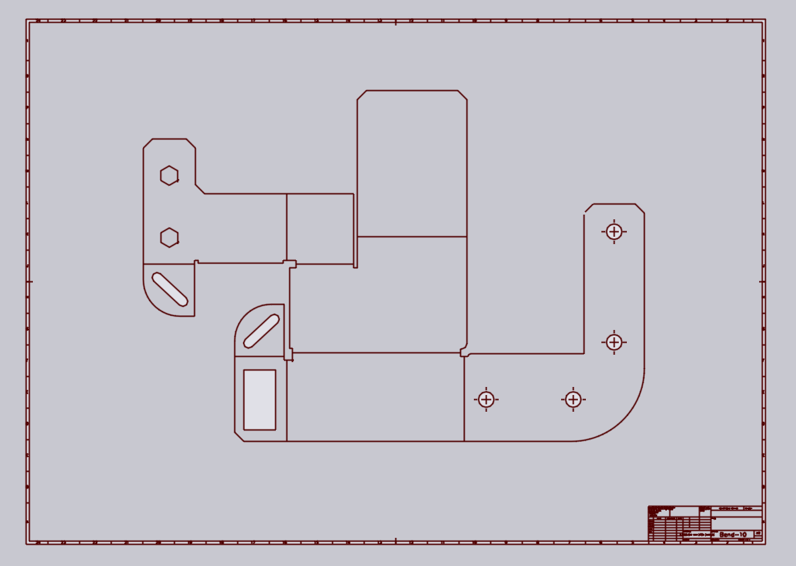

2D清理
以下是如何清理导入的DXF图纸并将其转换为可以进一步处理的_板材_图纸的方法。假设您从一个看起来像这样的DXF开始：

此DXF有几个问题需要修复：
-
有边框和标题块。
-
材料和厚度未指定（导入后可以看到 TecZone 窗口底部的选项卡为材料和厚度显示None, 0）。
-
一些轮廓没有_闭合_ - 一些转角附近有小的重叠或间隙。
-
没有折弯线信息（折弯线绘制为法线，但不包含有关其角度、方向或半径的信息）。
1：删除虚假实体
在中间的实际零件图纸周围画一个橡皮筋矩形（单击一个角，拖动到另一个角，然后松开鼠标按钮）。我们想要保留的实体都已选中：

单击切换按钮以选择_其他所有内容_，然后按该面板上的 Delete 按钮删除所有不需要的实体，如框架、标题块等。


3：设置材料
单击零件的材料名称（您可以在底部的文档选项卡上看到它），然后键入材料名称，或从材料列表中选择。然后，单击厚度（最初设置为0mm，然后设置零件厚度）。

在定义任何折弯线_之前_，请记得执行此步骤来设置材料和厚度。材料和厚度对于TecZone设置折弯余量至关重要[2]。